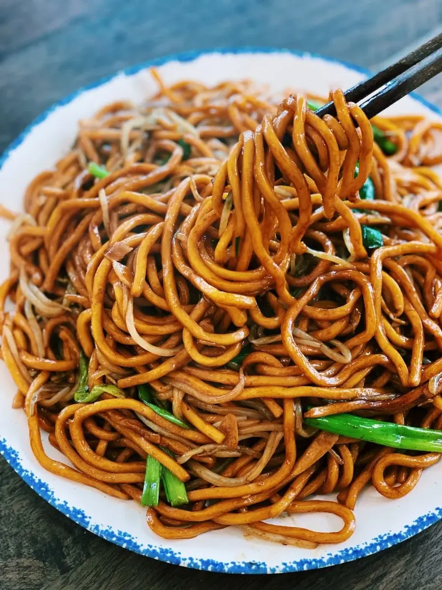

Noodles

Easy Weeknight Dinner Pan-Fried Noodles
Soy Sauce Pan-Fried Noodles has been on weeknight dinner rotation for the past few weeks! It takes less than 15 minutes to prepare, and you can adjust the ingredients based on what you have in the fridge. The noodles are bouncy, and after soaking up all that sauce, just the right amount of spicy and fragrant.
ingredients
450 g Noodles cooked
3 tbsp Soy Sauce
2.5 tbsp Dark Soy Sauce
2 tbsp Sugar
2 tbsp Sesame Oil
4 tbsp Water or Vegetable Stock
6 cloves Garlic sliced
3 Green Onion cut into 2-inch pieces
1-3 Red Chili chopped
1.5 cups Bean Sprouts
Steps
- In a bowl, mix soy sauce, dark soy sauce, sesame oil, water, and sugar till combined.
- Cook noodle as per instruction, drain and set aside.
- In a pan, drizzle in oil and turn the heat up to medium-high. Once the pan is hot, add garlic, the white part of green onion, and chopped red chili. Saute together for 2-3 minutes
- Add in the noodles and pour in the sauce; mix so all the noodles are coated.
- Turn the heat to high, add in bean sprouts, saute on high heat for 2-3 minutes.
- Add in the rest of the green onion, saute on high heat for 1-2 minutes.
Home